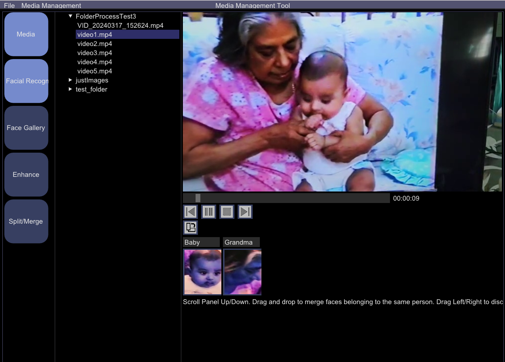

Face Vault Memories is a media management software that allows users to organise their media files (both images and videos). The software also runs facial recognition on all media files and displays the faces of people found in the media files. The user can then add names to the faces so that the software can identify these faces automatically in the future.

Please note that this software is still under development and work is still ongoing to stabilize the code. Facial recognition is also currently just functional at most and not world-class. So manage your expectations.
Click below to download:
Download Installer